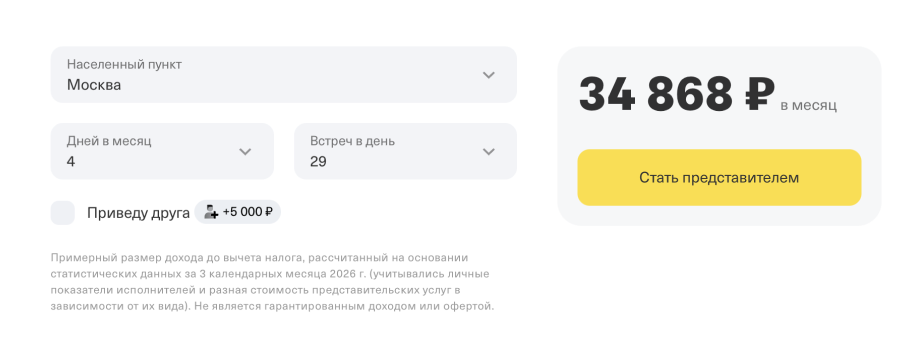
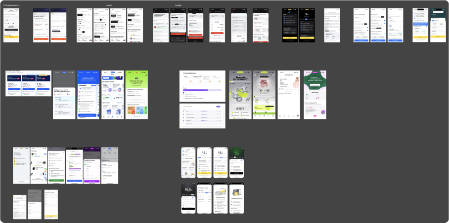
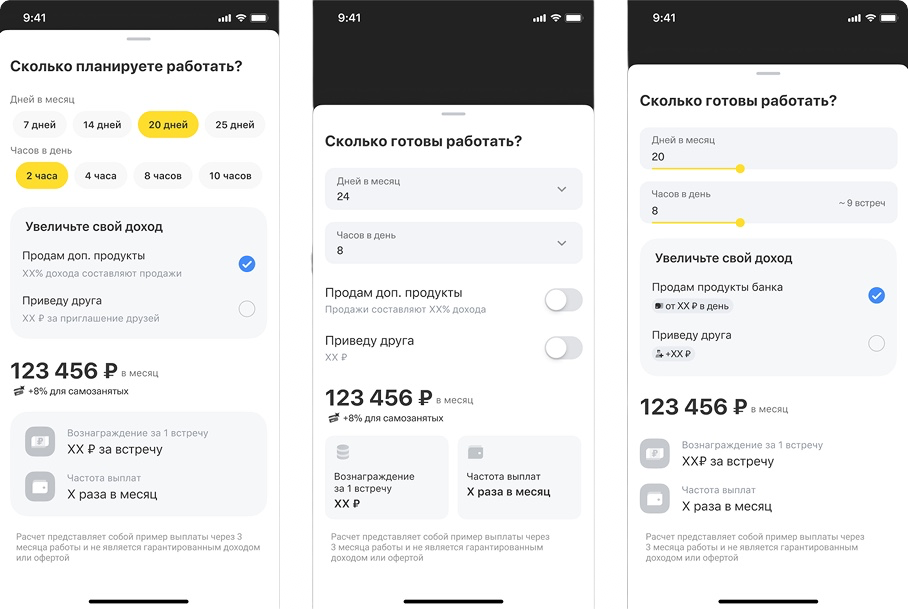
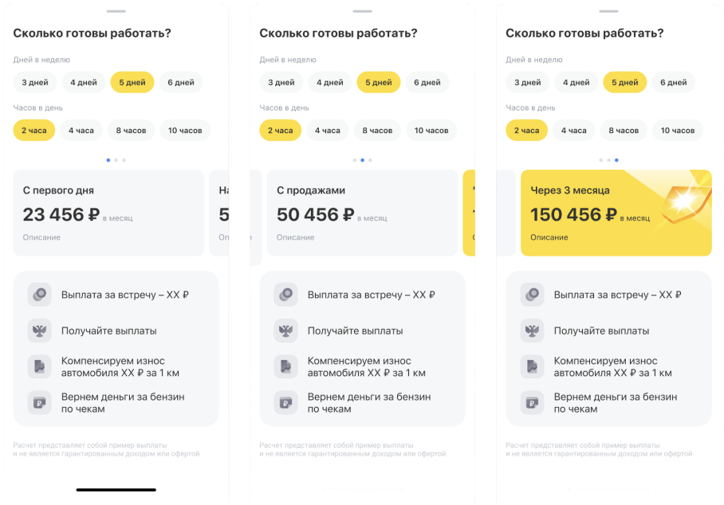
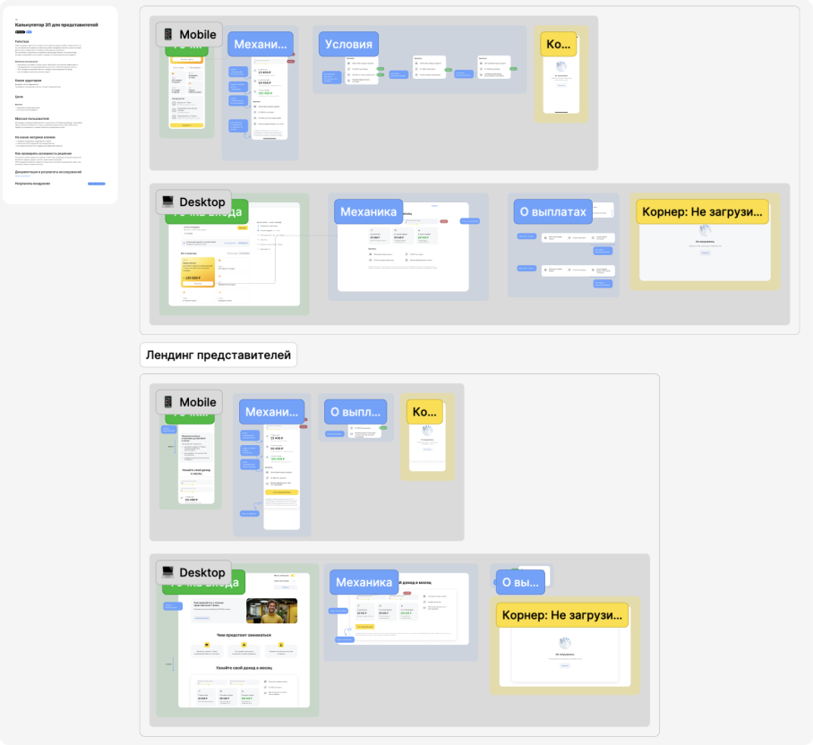

Калькулятор зарплаты Представителя
Контекст задачи
Представитель — сотрудник банка, который встречается с клиентами лично: доставляет банковские продукты, знакомит с ними и помогает подобрать подходящее предложение.
Роль и команда
Я участвовала на всех этапах разработки как продуктовый дизайнер.
Зарплата представителя не бывает фиксированной. Она зависит от региона, количества рабочих дней и часов, продаж и еще многих факторов.
В вакансии на роль представителя указана средняя зарплата по региону. На карьерном сайте есть калькулятор, в котором можно посчитать зарплату, указав количество дней и часов работы.
Проблемы пользователей
ЗП, указанная и сумма, которую считает калькулятор – это средняя ЗП по региону. Она не является фактической зарплатой, которую будет получать кандидат сразу после трудоустройства.
Калькулятор as is

Находится на карьерном сайте. Внутри простая формула, которая считает среднюю зарплату в час и перемножает на выбранные дни и часы.
• пользователь не понимает, что сумма в калькуляторе не соответствует реальной выплате
• в авторизованной и неавторизованной зоне отсутствует понятный инструмент расчета;
• часть кандидатов продолжает воронку с некорректными ожиданиями по доходу;
• часть кандидатов отсеивается слишком поздно.
Гипотеза
Если дать кандидату возможность заранее рассчитать потенциальный доход с помощью калькулятора, он сможет оценить привлекательность условий ещё до продолжения процесса. Это позволит отсеять неподходящих кандидатов на раннем этапе и повысить конверсию из найма в закрепляемость.
Как проверить успешность решения?
После обсуждения мы с командой решили провести A/B тест
1. Контрольная группа (50%) - текущая реализация без изменений
2. Тестовая группа (50%) - новый блок «Ваша вакансия» в ЛКК с калькулятором
Метрики:
• 📈 Конверсия из трудоустройства в закрепляемость 2 недели — ожидается рост
• 📉 CR в следующий шаг — ожидается снижение
• 📈 CR в трудоустройство — без изменений
• 📉 Обращения в поддержку по вопросам дохода — ожидается снижение
Решение
Что еще можно сделать?
Сразу после трудоустройства зарплата действительно ниже, чем средняя ЗП по региону. Но после прохождения обучения представитель начинает зарабатывать больше. Если показать эту динамику, то у кандидата будет мотивация работать.
Механика
Обсудив эту идею на синке с командой, мы решили, что в калькуляторе должна рассчитываться не 1 сумма, а 3.
1. ЗП с первого дня (только доставка продуктов)
2. ЗП с продажами продуктов банка
3. ЗП после завершения обучения
Таким образом мы полностью опрозрачиваем доход для кандидата.
Бенчмаркинг
Подобных решений для расчета на рынке не очень много. Я провела бенчмаркинг, чтобы поискать общие паттерны

Первые варианты
Сначала мы хотели сделать сумму интерактивной. Она менялась с помощью контролов, с которыми взаимодействует кандидат.

Но такая механика также предполагала усложнение формулы, так как пользователь ее контролировал и усложняло юзабилити.
Было решено расположить все суммы “в открытую” и делать расчет подкапотно, без вовлечения пользователя. Это упрощает процесс подсчета, а разница становится нагляднее.

Финальный дизайн
В итоговом варианте решили располагать суммы в формате таймлайна. Метафора развития со временем и все 3 суммы видны сразу.
Передача в разработку
После утверждения дизайна отрисовала адаптив, прописала флоу механику, добавила корнеры, прописала с редактором тексты в интерфейсе.
Калькулятор будет находится в авторизованной (Личный кабинет кандидата) и не авторизованной зоне (лендинг).
Макеты для передачи

Результаты
A/B-тест показал положительную динамику по основным метрикам. Точные значения не раскрываю из-за NDA.
📈 Закрепляемость через 2 недели:+8%
📉 CR в следующий шаг:−6%
→ CR в трудоустройство:без значимых изменений
📉 Обращения в поддержку по вопросам дохода и графика:−17%
Дополнительно
• 👥 50% кандидатов зашли в калькулятор
• 70% из них произвели расчет
Это подтвердило востребованность и понятность функции и показало, что после входа в сценарий пользователи хорошо доходят до его целевого действия.
*данные в двух кейсах одинаковые, тк у этих задач общий эпик